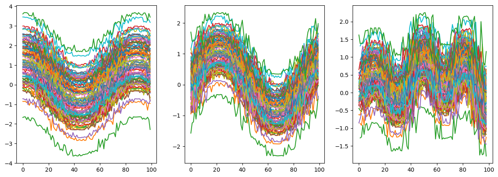
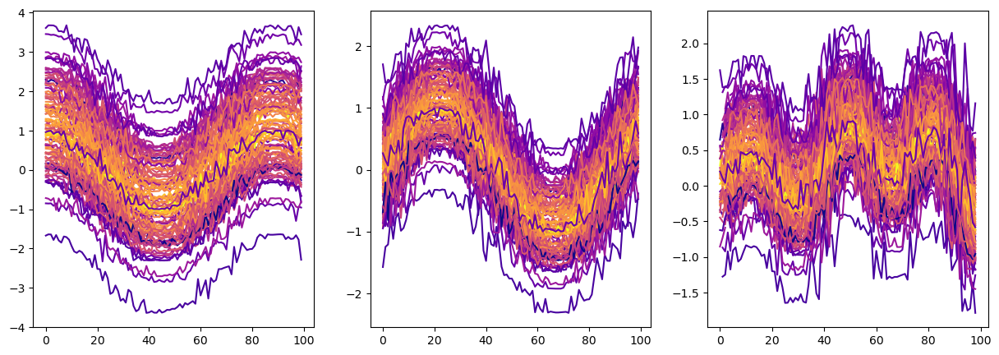

Functional depth#
Sample usage of Depth for functional data. It will plot samples and dataset based on depth notions.
[1]:
from depth.model.DepthFunc import DepthFunc
import numpy as np
import pandas as pd
from matplotlib import pyplot as plt
[2]:
## Creating dataset and samples
np.random.seed(2801)
n_cases = 100
rows = []
# fig,(ax1,ax2,ax3)=plt.subplots(1,3,figsize=(15,5))
for case in range(1, n_cases + 1):
n_points = 100#np.random.randint(3, 16)
timestamps = pd.to_datetime("2024-01-01") + pd.to_timedelta(
np.sort(np.random.randint(0, 1000, n_points)), unit='s'
)
baseVal = np.linspace(0,7,n_points)+np.random.normal(0,.2,n_points)
bruit = np.random.normal(0,1,1)
value_1 = np.cos(baseVal)+bruit
value_2 = np.sin(baseVal)+bruit*0.5
value_3 = np.cos(baseVal)*np.sin(baseVal**1.2)+bruit*0.5#+np.sin(baseVal)#+decVal
# value_2 = np.random.rand(n_points)
# value_3 = np.random.rand(n_points)
value_3[-1] = None
for t, v1, v2, v3 in zip(timestamps, value_1, value_2, value_3):
rows.append([case, t, v1, v2, v3])
# ax1.plot(timestamps,value_1)
# ax2.plot(timestamps,value_2)
# ax3.plot(timestamps,value_3)
df = pd.DataFrame(rows, columns=["case_id", "timestamp", "value_1", "value_2", "value_3"])
df.head(10)
/var/folders/jb/vgyp2lnd2l114w99s_3t_1zr0000gn/T/ipykernel_65156/2843931067.py:15: RuntimeWarning: invalid value encountered in power
value_3 = np.cos(baseVal)*np.sin(baseVal**1.2)+bruit*0.5#+np.sin(baseVal)#+decVal
[2]:
| case_id | timestamp | value_1 | value_2 | value_3 | |
|---|---|---|---|---|---|
| 0 | 1 | 2024-01-01 00:00:46 | 0.854275 | 0.289880 | 0.211413 |
| 1 | 1 | 2024-01-01 00:00:49 | 0.911695 | -0.038468 | -0.042127 |
| 2 | 1 | 2024-01-01 00:01:02 | 0.843568 | 0.318681 | 0.235291 |
| 3 | 1 | 2024-01-01 00:01:44 | 0.756153 | 0.491501 | 0.363903 |
| 4 | 1 | 2024-01-01 00:02:04 | 0.751440 | 0.498861 | 0.368497 |
| 5 | 1 | 2024-01-01 00:02:10 | 0.883749 | 0.190679 | 0.127715 |
| 6 | 1 | 2024-01-01 00:02:23 | 0.730421 | 0.530062 | 0.386823 |
| 7 | 1 | 2024-01-01 00:02:38 | 0.667949 | 0.610152 | 0.423474 |
| 8 | 1 | 2024-01-01 00:02:42 | 0.370105 | 0.844604 | 0.367368 |
| 9 | 1 | 2024-01-01 00:02:52 | 0.704664 | 0.565137 | 0.404913 |
[3]:
fig,(ax1,ax2,ax3)=plt.subplots(1,3,figsize=(15,5))
for case in range(1, n_cases + 1):
ax1.plot(df[df.case_id==case].value_1.values)
ax2.plot(df[df.case_id==case].value_2.values)
ax3.plot(df[df.case_id==case].value_3.values)
plt.show()

Create model and load dataset for depth computation
[4]:
model=DepthFunc().load_dataset(df,interpolate_grid=False)
Dpth=model.projection_based_func_depth(df,notion="projection",output_option="lowest_depth",NRandom=1000)
print("depth of first 10 functions:" , Dpth)
timestamp_col is set to timestamp
value_cols is set to Index(['value_1', 'value_2', 'value_3'], dtype='object')
case_id is set to case_id
depth of first 10 functions: [0.3388853 0.29009489 0.21494666 0.34792041 0.25765167 0.28470119
0.25937847 0.24050913 0.27550712 0.19849267 0.32483688 0.30455655
0.25793978 0.26806925 0.27723243 0.24156398 0.34640756 0.25445037
0.31343481 0.37869565 0.24025661 0.29034904 0.29705978 0.15790088
0.20839458 0.25147152 0.26564955 0.33116326 0.30327052 0.36766294
0.28437254 0.19088241 0.16102735 0.26368617 0.24188281 0.25022952
0.23399113 0.28286471 0.30675224 0.25640107 0.31962641 0.17969126
0.24907893 0.31116663 0.22636427 0.30769636 0.2912037 0.17976663
0.19890258 0.34064447 0.32316514 0.19912518 0.26479623 0.22622901
0.35442888 0.27347742 0.24463971 0.32774463 0.31587855 0.30867283
0.28155623 0.23778289 0.28762713 0.26330651 0.25701127 0.2374093
0.31025968 0.26683259 0.21011941 0.22507257 0.32026337 0.26828048
0.17385489 0.21740104 0.23827362 0.18635567 0.37801541 0.31365577
0.33009856 0.19140662 0.21392748 0.29589068 0.18511312 0.30980199
0.31688997 0.27673889 0.31532046 0.26362999 0.32114015 0.31371683
0.34578701 0.28054447 0.24346631 0.27529592 0.22583862 0.29623116
0.14715032 0.19439345 0.25310626 0.27466476]
[5]:
from matplotlib import cm
fig,(ax1,ax2,ax3)=plt.subplots(1,3,figsize=(15,5))
for case in range(1, n_cases + 1):
ax1.plot(df[df.case_id==case].value_1.values,c=cm.plasma((Dpth[case-1]-Dpth.min())/(Dpth.max()-Dpth.min())))
ax2.plot(df[df.case_id==case].value_2.values,c=cm.plasma((Dpth[case-1]-Dpth.min())/(Dpth.max()-Dpth.min())))
ax3.plot(df[df.case_id==case].value_3.values,c=cm.plasma((Dpth[case-1]-Dpth.min())/(Dpth.max()-Dpth.min())))
plt.show()
